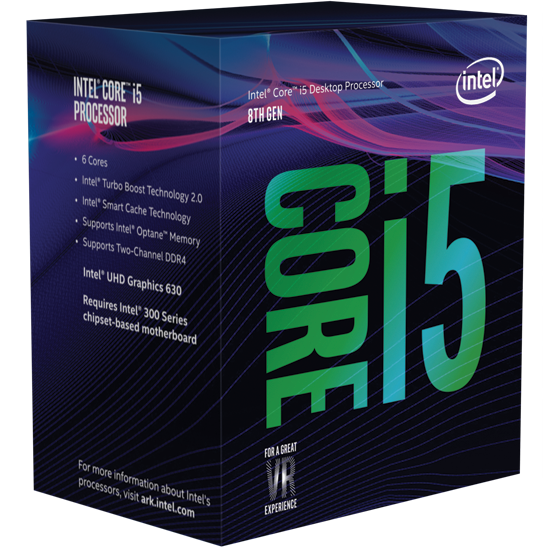

frekvencia
technológia


| AMD | INTEL | ||||
|---|---|---|---|---|---|
| AMD-Ryzen-5-2600 | AMD-Ryzen-5-3600 | Intel-Core-i5-8400 | Intel-Core-i5-9400 | ||
| Magok száma | 6 mag | ||||
| Szálak száma | 12 szál | 6 szál | |||
| Órajel frekvencia |
3.40 GHz | 3.60 GHz | 2.80 GHz | 2.90 GHz | |
| Gyártási technológia |
12nm | 7nm | 14nm | ||
| TDP | 65 W | ||||
| |
|
 | |
||
| Ár | 47.320Ft - 55.390Ft | 79.990Ft - 87.782Ft | 58.970Ft - 60.140Ft | 58.090Ft - 61.490Ft | |
| |
Specifikáció | Specifikáció | Specifikáció | Specifikáció | |
| Sebesség teszt | Sebesség teszt | Sebesség teszt | Sebesség teszt | ||